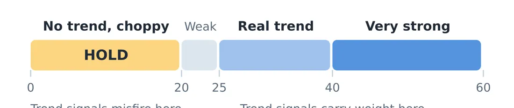
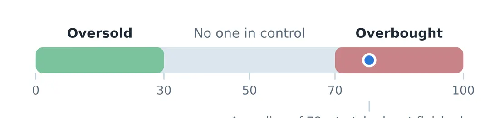
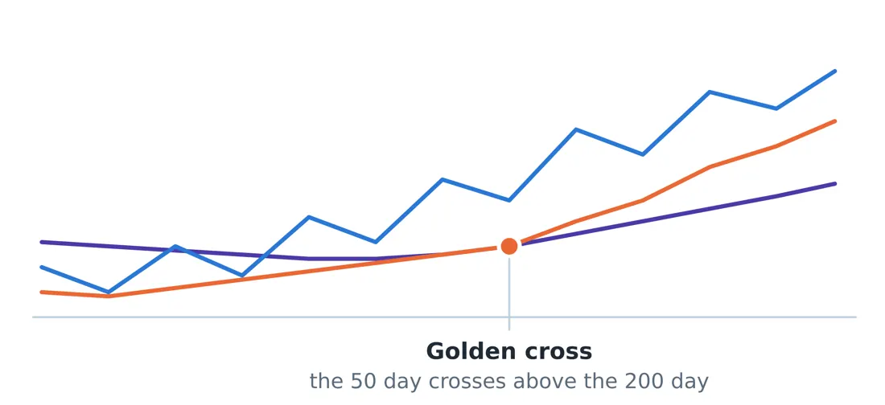
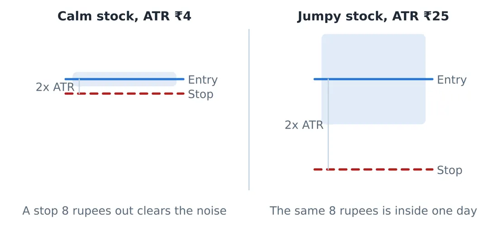
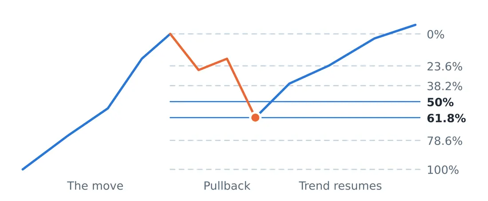
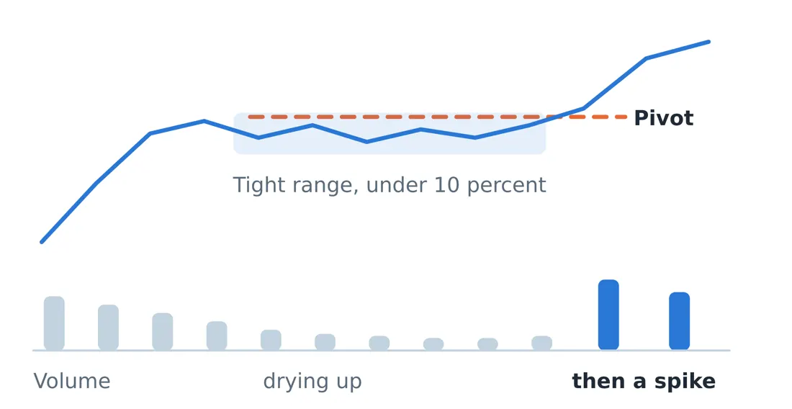

Library / MiyeeStockBuddy: The Complete Guide to Indian Markets
Part 6. The Indicator Guide
An indicator is arithmetic performed on price and volume, presented as a line. Every one of them looks backwards, because every one of them is calculated from data that has already happened. Used as a summary of what is going on, they are useful. Used as an instruction, they will lose you money.
Learn two or three properly rather than twelve superficially. Twelve indicators saying the same thing in twelve ways is not confirmation; it is the same information counted twelve times.
6.1 ADX: Learn This One First
The Average Directional Index measures how strong a trend is, without saying which direction it points. That sounds unhelpful and is in fact the most valuable thing an indicator can tell you, because almost every other indicator only works when a trend exists.

Figure 3. ADX answers whether there is a road here at all, not which way it points. Below 20 the market is choppy, trend signals misfire, and doing nothing is usually the winning move.
ADX reading | What it means | What to do | |
|---|---|---|---|
Below 20 | No trend. Price is chopping sideways. | Stand aside. Trend signals will misfire here. | |
20 to 25 | A trend may be forming | Watch, prepare, do not commit yet | |
25 to 50 | A healthy, tradeable trend | Trend following works in this zone | |
Above 50 | Very strong trend | Real, but late. Chasing here is dangerous. | |
The rule to remember Knowing when not to trade is worth more than any signal telling you to act. Most losses accumulate in sideways markets, where every indicator gives signals and none of them work. ADX below 20 is the market telling you to do nothing, and doing nothing is a position. | |||
6.2 RSI: The Speedometer
The Relative Strength Index compares the size of recent gains against the size of recent losses and turns it into a number between zero and one hundred. It measures how stretched a move has become.

Figure 4. RSI is a speedometer, not a steering wheel. Above 70 the move is stretched and often pauses; below 30 it is washed out and often bounces. Neither is an automatic instruction to trade.
Above 70 is called overbought, meaning the rise has been fast and one sided. Below 30 is oversold. The common and expensive mistake is to read these as instructions to sell and buy.
Careful here In a strong trend, RSI can sit above 70 for weeks while the price keeps rising. Selling every time RSI crosses 70 means selling the best stocks in the strongest markets, over and over. RSI is a speedometer, not a steering wheel. It tells you the speed, not whether to turn. |
Divergence, the genuinely useful RSI signal
When the price makes a higher high but RSI makes a lower high, the new high was achieved with less force than the previous one. That is bearish divergence, and it often precedes a pause or a reversal. The reverse, a lower low in price with a higher low in RSI, is bullish divergence.
Divergence is a warning, not a trigger. Wait for the price itself to confirm by breaking a level before acting.
6.3 Moving Averages: The Smoothed Trend
A moving average is the average closing price over the last N days, recalculated daily. It removes the noise and shows the direction underneath. The longer the period, the slower and steadier the line.

Price · SMA 50 · SMA 200
Figure 5. The longer the average, the slower and steadier the line. When the 50 day average crosses above the 200 day, the market is widely read as having shifted into a longer term uptrend.
Average | Typically used for | Common reading |
|---|---|---|
20 day | Short term trend | Price above it: short term buyers are in control |
50 day | Medium term trend | A common place for pullbacks to find support |
200 day | Long term trend | Above it is widely treated as a bull market for that stock |
When the 50 day average crosses above the 200 day, it is called a golden cross and is widely read as a shift into a longer term uptrend. The reverse crossing is a death cross. Both are genuinely followed by enough money that they become partly self fulfilling, which is the only honest reason they work at all.
Careful here Moving averages lag by construction. In a sideways market the price crosses them constantly and every crossing is a false signal. This is why ADX comes first: check that a trend exists before you use a trend tool. |
6.4 MACD: Two Averages, One Momentum Reading
MACD subtracts a slow moving average from a fast one, and then plots a signal line on top of that. When the fast line pulls away from the slow one, momentum is building. When they converge, it is fading.
- MACD crossing above its signal line: momentum turning up.
- MACD crossing below its signal line: momentum turning down.
- MACD above or below zero: tells you which side of the longer trend you are on.
The histogram bars show the gap between the two lines. Shrinking bars mean the current move is losing force, often before the lines actually cross, which is why some traders watch the histogram rather than the crossing.
6.5 ATR: Your Volatility Yardstick
The Average True Range measures how far a stock typically travels in a day, in rupees. It says nothing about direction. Its entire purpose is to tell you what counts as normal movement for this particular stock, so that you can place a stop loss outside the noise.

Figure 6. The shaded band is a normal day for each stock. A stop closer than one ATR sits inside the noise and gets hit for reasons that have nothing to do with your idea being wrong.
Why ATR decides your stop, not your comfort Stock A trades at 400 with an ATR of 4 rupees. A normal day moves it 4 rupees. Stock B trades at 400 with an ATR of 25 rupees. A normal day moves it 25 rupees. A 10 rupee stop on Stock A sits outside the daily noise and is a real stop. The same 10 rupee stop on Stock B sits well inside a single ordinary day, and will be hit by nothing more than a Tuesday. A reasonable stop distance is roughly 1.5 to 3 times ATR. On Stock B that means 37 to 75 rupees, which sounds enormous until you accept that the alternative is being stopped out repeatedly for no reason. |
The rule to remember Set the stop where the idea is proved wrong, then set the position size so that the loss at that stop is affordable. Never do it the other way round, which is choosing a stop close enough that a large position feels safe. That is how a large position and a tight stop combine into repeated small losses. |
6.6 Fibonacci Retracement Levels
After a strong move, price rarely travels back in a straight line. It pauses at proportions of the previous move: 38.2 percent, 50 percent and 61.8 percent are the ones most watched. There is nothing mystical about these numbers. They work partly because a very large number of traders are watching the same three lines and placing orders there.

Trend · Pullback
Figure 7. After a strong move, price rarely travels back in a straight line. It pauses at levels traders everywhere are watching. The 50 and 61.8 percent steps are where healthy pullbacks usually end.
A healthy pullback in a strong uptrend usually stops around the 38.2 or 50 percent level. A pullback that slices through 61.8 percent is telling you the buyers who drove the move are no longer defending it, and the trend is in question.
6.7 The Volume Based Indicators
MFI, the Money Flow Index
MFI is RSI with volume added, so it measures not just how hard the price moved but how much money moved with it. Readings above 80 and below 20 are the usual extremes. Because it accounts for volume, a divergence between price and MFI is generally a stronger warning than an RSI divergence alone.
OBV, On Balance Volume
OBV adds the day’s volume when the stock closes up and subtracts it when the stock closes down. The absolute number is meaningless. The direction is not. When price is flat but OBV is climbing steadily, someone is accumulating quietly, and that has genuine predictive value more often than most indicators.
6.8 The Automatic Traffic Lights: Supertrend and Parabolic SAR
Both draw a line that flips from one side of the price to the other, giving a visible buy or sell state without interpretation. Supertrend uses ATR to set the distance, which is why it adapts to each stock’s own volatility.
They are excellent in trending markets and genuinely poor in sideways ones, where they flip back and forth and generate a string of small losses. Once again the answer is to check ADX first.
6.9 The Base Breakout Screen
This combines several of the ideas above into one setup, and it is the most reliable pattern in this guide because each element confirms a different thing.

Figure 8. Weeks of narrow, quiet trading on falling volume means the sellers are finished. When there is no supply left, it takes very little demand to move the price sharply.
1. Tight consolidation. The stock trades in a narrow range, under about ten percent from high to low, for several weeks. A narrow range means buyers and sellers agree on price, which means there is no eager supply left.
2. Volume drying up. Falling volume during the base is the signal that sellers are finished. Nobody is dumping stock any more.
3. Range expansion on the break. The breakout candle is much larger than the recent daily average. A quiet break is usually a false one.
4. A volume spike on the pivot. Volume of at least one and a half to two times the recent average as the price clears the top of the base. This is the crowd arriving.
When all four appear together, the stop loss placement is obvious, which is the practical advantage: just below the base. A tight base means a tight stop, which means a larger position for the same rupee risk. That relationship between a good setup and a good risk profile is why this pattern is worth waiting for.
© Vipin Nair. This guide is for reading online only. Copying, downloading, printing and redistribution are not permitted. For study and general reference; not legal, tax or investment advice.